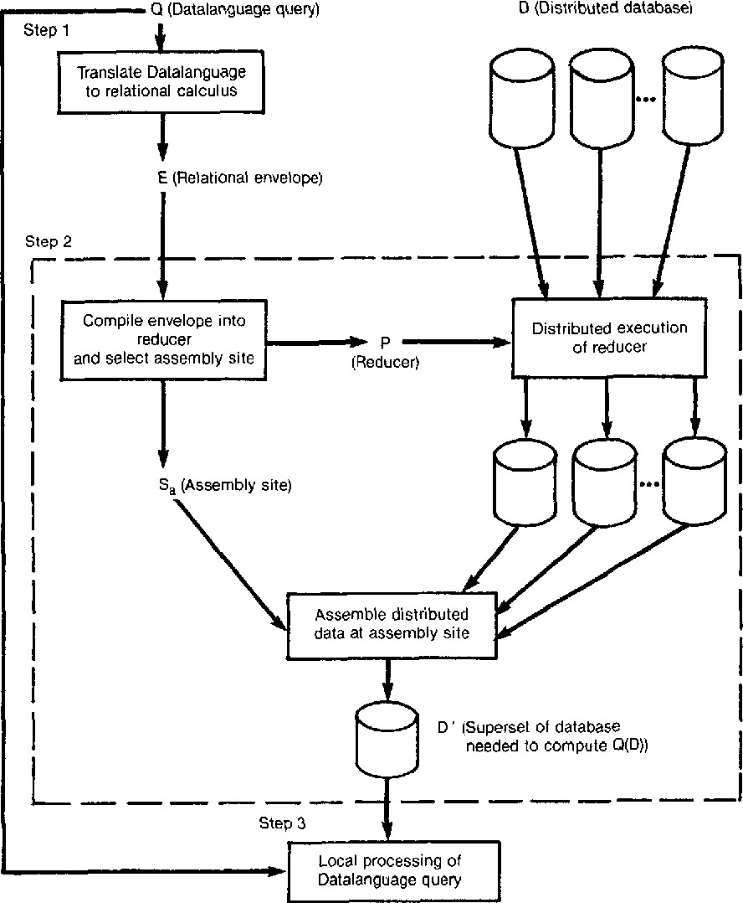

Analytics
Beware of hollow extactness, because it is the same as exact emptiness. (Mario Bunge)Distributed databases
Figure 1. Main steps of query processing algorithm from (Bernstein et al., 1981).
collateral (sikkerhetsstillelse) - something pledged as security for repayment of a loan, to be forfeited in the event of a default.
References
- Cambridge Dictionary. (2023, August 16). blockchain. @CambridgeWords. https://dictionary.cambridge.org/dictionary/english/blockchain (Cambridge Dictionary, 2023a)
- blockchain - Quick search results | Oxford English Dictionary. (2023). Oed.com. https://www.oed.com/search/dictionary/?scope=Entries&q=blockchain (Blockchain - Quick Search Results | Oxford English Dictionary, 2023)
- Science of Blockchain Conference 2022. (2022). Stanford.edu. https://cbr.stanford.edu/sbc22/ (Science of Blockchain Conference 2022, 2022)
- Lamport, L. (1983). The Weak Byzantine Generals Problem. Journal of the ACM, 30(3), 668–676. https://doi.org/10.1145/2402.322398 (Lamport, 1983)
- Vikram Dhillon. (2021). Blockchain Enabled Applications : Understand the Blockchain Ecosystem and How to Make It Work for You. Apress L. P. (Vikram Dhillon, 2021)
- Christophe Schinckus. (2020). The good, the bad and the ugly: An overview of the sustainability of blockchain technology. Energy Research and Social Science, 69, 101614–101614. https://doi.org/10.1016/j.erss.2020.101614 (Christophe Schinckus, 2020)
- The World’s Oldest Blockchain Has Been Hiding in the New York Times Since 1995. (2018, August 27). Vice.com. https://www.vice.com/en/article/j5nzx4/what-was-the-first-blockchain (The World’s Oldest Blockchain Has Been Hiding in the New York Times since 1995, 2018)
- Lamport, L. (1983). The Weak Byzantine Generals Problem. Journal of the ACM, 30(3), 668–676. https://doi.org/10.1145/2402.322398 (Lamport, 1983)
- Systemspedia. (2019). Bcsss.org. http://systemspedia.bcsss.org/?title=ARTIPHYSIS (Systemspedia, 2019)
- Sherman, A. T., Javani, F., Zhang, H., & Golaszewski, E. (2019). On the Origins and Variations of Blockchain Technologies. IEEE Security & Privacy, 17(1), 72–77. https://doi.org/10.1109/msec.2019.2893730 (Sherman et al., 2019)
- Haber, S., & Stornetta, W. Scott. (1991). How to time-stamp a digital document. Journal of Cryptology, 3(2). https://doi.org/10.1007/bf00196791 (Haber & Stornetta, 1991)
- Kim, L. (2023, September 5). The Mysterious Power of the Platform, the Internet’s Building Block. WIRED; WIRED. https://www.wired.com/story/lexicon-platform-linguistics-philosophy/ (Kim, 2023)
- Wikipedia Contributors. (2023, April 7). One-time password. Wikipedia; Wikimedia Foundation. https://en.wikipedia.org/wiki/One-time_password (Wikipedia Contributors, 2023)
- Bernstein, P. A., Goodman, N., Wong, E., Reeve, C. L., & Rothnie, J. B. (1981). Query processing in a system for distributed databases (SDD-1). ACM Transactions on Database Systems, 6(4), 602–625. https://doi.org/10.1145/319628.319650 (Bernstein et al., 1981)